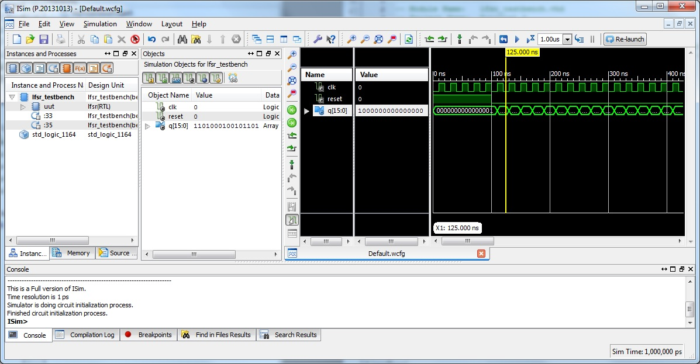
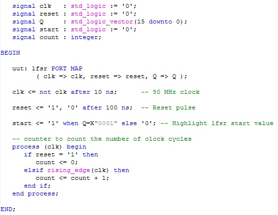
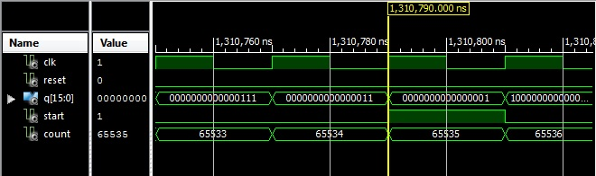

EEE6225 Systems Design
| Tutorial 2: Linear Feedback Shift Register |
| Simulating the design |
To simulate the design, make sure the lfsr_testbench.vhd file is selected in Project Navigator's Hierarchy window, then in the Processes window expand the ISim Simulator option to reveal the Simulate Behavioural Model item and double-click on this to start and load your design into the ISim simulator. Because Project Navigator associated the test bench file with your original lfsr file (see how one is tree'd below the other in the Hierarchy window) ISim has analyzed your VHDL files in the correct order. (We always need to analyze the constituent parts of a design in such a way that the component parts of any larger entity are already analyzed before that larger entity and its associated architecture(s) are analyzed. Here component lfsr matches identically names entity lfsr and so this entity is used for that component without any other configuration information providing the VHDL analyser has heard of the lfsr entity before the architecture with the identically named component is analysed). The simulator now starts, where the interface should be similar to that shown in Figure 1. |
|  Figure 1. ISim screen shot |
The ISim interface consists of a menu bar and several windows docked together, including the waveform window. Use the zoom in and out buttons on the toolbar to see more or less of the waveform. To view the entire waveform simulation so far click on the Zoom to full view icon . To simulate the testbench for more time or until no futher switching activity the toolbar provides these controls: . The leftmost button will cause the simulation to run until all switching activity ceases (or indefinately). The play symbol with the hourglass causes the simulation to run for the time specified in the combo-box immediately to its right. Each time the button is pressed a further period will be simulated. Alternatively in the Console window you may type commands such as run -all or run 1 us to achieve the same effect. An alternative method of zooming the waveform is to drag across it with the left mouse button pressed; this places timing cursors then the zoom to cursors button can be clicked . If your mouse has a middle button draging across the waveform with this depressed will automatically zoom in, out or to a region. Given that this is 16 bit maximal length LFSR, it should require 65534 clock edges after the one where the value of Q changes from 0000000000000001, 1000000000000000, 0100000000000000, ... to get back to the first value again. This would take us a long time repeatedly pressing the run button. To avoid this, type run 1.4 ms in the Console window (assuming clock was set to 50MHz). When the simulator stops running, search back through time in the waveform viewer until you find the clock cycle where Q is 0000000000000001. This should start at 1,310,790ns. Ascertain that the output cycles over the correct number of clock cycles and ensure that there is no occurrence of this value between initialisation and 1,310,790 ns. Manually searching through 65535 values would take a considerable amount of time and effort, so we need to think of an alternative: one option would be to add an extra signal to the testbench which is set when the required value of the output Q is found. Edit the testbench to add signal start : std_logic := '0'; with the other signal declarations and in the architecture section add the continuous conditional assignment statement start <= '1' when Q=X"0001" else '0';. Save the revised testbench and click on the Relaunch button on the toolbar. If the start signal does not appear in the waveform view then drag it from the Objects window on to the waveform display. Similarly if you dont want to count the clock cycles then add a counter to do so to the testbench: |
|  Figure 2. Testbench with start detection and counter added |
Look through the simulation output in the waveform window and decide whether the simulation is behaving as the logic in the VHDL seems to require. Using the zoom controls you should be able to produce a view as in Figure 3. |
|  Figure 3. Correct LFSR operation |
Close down (quit) the ISim simulator. Having designed and simulated our circuit block we now need to implement the circuit using ISE. When we come to implement this block in an FPGA, we will need to ensure that the behaviour of the outputs is identical to the behaviour exhibited in the simulation. |
| Continue on to Onward design |